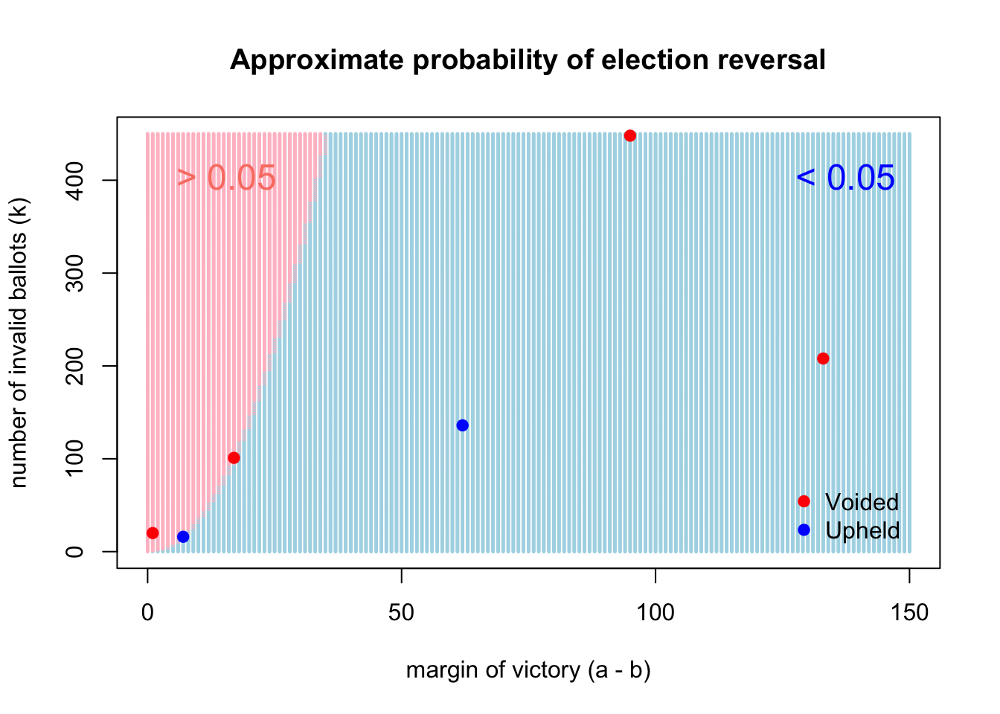

Recommend some music for us to listen to while we grade this.
Problem 1
Sadly, we have a midterm exam coming up on Thursday October 9. Everything you have seen on Problem Sets 1 through 4 is fair game for the exam: set theory, probability spaces and axioms, probability rules and proofs, counting, conditional probability and independence, and discrete random variables.
Look back through the course materials thus far and select the topic that you think you understand the least. Study this topic carefully and then do two things:
Write a few paragraphs where you explain this topic to a five-year-old using only words, pictures, and toy examples;
After you’re done reviewing, and after your response to part a, include one thing you’re still unsure about or a question you’d like to ask about your chosen topic.
After you submit this problem set, I will answer all of the class’s questions and post an anonymized “Q&A” as part of the exam review materials.
Let \(A\), \(B\), and \(C\) be events with \(P(C) > 0\). \(A\) and \(B\) are conditionally independent given \(C\) if and only if
\[
P(A \cap B \mid C) = P(A \mid C)P(B \mid C).
\]
Show that the above implies \(P(A \mid B\cap C) = P(A \mid C)\).
Problem 4
An urn contains three white balls and two red balls. The balls are drawn from the urn one at a time, at random and without replacement, until we have drawn all of the balls from a color group. As soon as every ball of either color is drawn, we stop. Let \(X\) be the number of balls drawn in this process.
What is the range of the random variable \(X\)?
What is the probability mass function of \(X\)?
Sketch the CDF of \(X\).
Compute \(E(X)\).
Three balls were drawn, and then we stopped because all of one of the colors was drawn. Given this, what is the probability that the last ball we drew was red?
Problem 5
King Elessar summons the wizard Gandalf to court, seeking his counsel. A foul plague has been incapacitating the soldiers. King Elessar asks Gandalf if there exists a test for the disease that is 100% sensitive and 100% specific (ie perfect). Gandalf says that a perfect blood test does exist, but it is very expensive, requiring the venom of a special lizard found only in the Morgul Vale. Each blood test would cost one gold piece, but the Royal Purse only has 500 gold pieces to spare, and there are 1000 soldiers that need to be tested. Gandalf sleeps on it and returns the next day with a plan for testing all of them that won’t break the bank:
Take a blood sample from each of the 1000 soldiers;
Split each of these samples into two parts;
Take one part of each sample and mix batches of ten of the samples together to create 100 mixed samples.
Test each of those mixed samples;
A few things could happen:
If the test gives a negative result, we know all of the original ten samples are clear, and we can move on;
If the test gives a positive result, then we know at least one of the original ten samples is positive. In that case we test the second part of the sample for each of the ten soldiers. We can then identify which soldiers are positive.
Gandalf finishes by saying “I expect sixty of the mixed batches to be negative. For the other forty batches, I expect the results to be positive, and hence we will have to test all four hundred of the original samples. This gives a total expected cost of 500 gold pieces.”
What disease prevalence is Gandalf implicitly assuming here?
Can Gandalf revise his scheme to reduce the expected cost even more?
Problem 6
Not all election challenges are frivolous and cynical. Sometimes there are illegal/ineligible ballots in a close election, and if a candidate raises a legal challenge, a court must make a decision: certify the original results? adjust the vote totals somehow, possibly reversing the election? void the results entirely and order a new election? The concern of course is that the presence of the bad ballots might have swung the outcome, but how likely is this? Let’s model it.
Imagine an election where Angela Lansbury receives \(a\) votes, Bernadette Peters receives \(b\) votes, and Angela provisionally wins with a margin of victory \(a-b>0\). However, of the total \(a+b\) votes, we learn that \(k>a-b\) were invalid or illegal. But we know nothing else. We do not know who these folks are, where they came from, or who they voted for. We just know that they exist. If the \(k\) invalid ballots were removed from the total, what is the probability that it would flip the result of the election? If this probability is “too big,” we might start to worry.
To model this, think of the original \(a+b\) ballots as balls in the proverbial urn. \(a\) of these balls are red, and \(b\) of these balls are blue, and assume that \(a,\, b>k\). Removing the \(k\) invalid ballots is like drawing \(k\) balls out of the urn without replacement. Since we know nothing about the illegal ballots apart from the fact that they exist, assume that each of the \(a+b\) original ballots is equally likely to have been invalid. Next, imagine we randomly remove \(k\) balls from the urn, and let \(X\) be a random variable that counts the number of the removed/invalid ballots that belong to Angela. In other words, the number of red balls removed. If \(X\) is large enough, it will swing the election in Bernadette’s favor.
What are the range and the pmf of the random variable \(X\)?
For what values of \(X\) does removing \(k\) ballots reverse the outcome of the election?
Based on your answers to the previous parts, what is the probability that the election result is reversed when the \(k\) bad ballots are removed? Give a general formula for this probability, and then compute the probability for each of the real elections listed in Table 1;
The random variable \(X\) that you derived in the first part can be approximated by \(\text{Binom}(k,\,1/2)\). Explain why this approximation might be “good enough,” and verify that it’s not too bad by computing the approximate probability of reversal for the elections in Table 1. Compare the approximate probabilities to the actual ones from the previous part;
Let’s say that we consider the probability of reversal “too big” if it is greater than 5%. Create a plot in R like Figure 1 with the following features:
the margin of victory \(a-b\) on the horizontal axis;
the number of bad ballots \(k\) on the vertical axis;
scatterplot where each point represents an election in Table 1, with the points colored according to the decision that was made in the case;
divide the plane into two regions, one where the approximate probability of reversal is less than 0.05 and one where it is greater.
Write a few pithy paragraphs commenting on the following:
the assumptions of our lil’ model. Do you think they are innocuous? What might you change, and how?
the match or lack thereof between our model and the decisions that were actually made in the real cases;
How do you think a court should handle a legitimate election challenge? What are their responsibilities to the electorate, and what should they prioritize? Should they err on the side of upholding or voiding results? Should they think probabilistically? Should they consult this model, or one like it?
Table 1: Close elections
election
year
win
loss
total
margin
invalid
decision
Ippolito v. Power
1968
1,422
1,405
2,827
17
101
void
Santucci v. Power
1969
58,076
57,981
116,057
95
448
void
DeMartini v. Power
1970
2,656
2,594
5,250
62
136
upheld
Maine House
1976
1,193
1,060
2,253
133
208
void
Ann Arbor mayor
1977
10,660
10,659
21,319
1
20
void
Brunswick ME town council
1980
2,390
2,383
4,773
7
16
upheld
Washington governor
2004
1,373,357
1,373,228
2,746,585
129
1,439
upheld
Code
elections<-data.frame( election =c("Ippolito", "Santucci", "DeMartini", "Maine", "Ann Arbor", "Brunswick", "Washington"), a =c(1422, 58076, 2656, 1193, 10660, 2390, 1373357), b =c(1405, 57981, 2594, 1060, 10659, 2383, 1373228), k =c(101, 448, 136, 208, 20, 16, 1439), decision =c("void", "void", "upheld", "void", "void", "upheld", "upheld"), col =c("red", "red", "blue", "red", "red", "blue", "blue"))reversal_prob_binom<-function(a, b, k){cutoff=ceiling(0.5*(k+a-b))1-pbinom(cutoff-1, k, 1/2)}margin_grid<-0:150k_grid<-0:450n_points<-length(margin_grid)*length(k_grid)grid<-data.frame( margin =numeric(n_points), k =numeric(n_points), color =rep("lightblue", n_points))row<-0for(xinmargin_grid){for(yink_grid){row<-row+1grid[row, 1]<-xgrid[row, 2]<-yif(reversal_prob_binom(1+x, 1, y)>=0.05){grid[row, 3]<-"pink"}}}plot(grid$margin, grid$k, col =grid$color, pch =19, cex =0.2, xlab ="margin of victory (a - b)", ylab ="number of invalid ballots (k)", main ="Approximate probability of election reversal")points(elections$a-elections$b, elections$k, pch =19, col =elections$col)legend(-7, 450, "> 0.05", text.col ="salmon", bty ="n", cex =1.5)legend(115, 450, "< 0.05", text.col ="blue", bty ="n", cex =1.5)legend(125, 85, c("Voided", "Upheld"), pch =19, col =c("red", "blue"), bty ="n")

Figure 1
Problem 7
Forty-nine members of the Cleveland Orchestra string section wish to compare their birthdays. Assume that no one has February 29th and that all birthdays are independent.
What is the expected number of pairs of people with the same birthday?
What is the expected number of days on which at least two players were born?
Problem 8
A pair of fair dice is rolled until a sum of either a 5 or a 7 appears. What is the probability that a 5 occurs first?
Problem 9
Let \(X\) be a random variable with the following pmf:
\(x\)
\(P(X=x)\)
-1
0.500
0
0.250
1
0.125
2
0.125
What is the mean of \(X\)?
What is the pmf of \(Y = 2X-3\)?
What is the mean of \(Y\)?
What is the pmf of \(W = X^2\)?
What is the mean of \(W\)?
What is the conditional pmf of \(X\) given \(X \neq 0\)?
What is the conditional mean of \(X\) given \(X \neq 0\)?
You are free to compose your solutions for this problem set however you wish (scan or photograph written work, handwriting capture on a tablet device, LaTeX, Quarto, whatever) as long as the final product is a single PDF file. You must upload this to Gradescope and mark the pages associated with each problem.
If a problem required you to code something, please include both the code and the output. “Including the code” can be as crude as a screenshot, but you might also use Quarto to get a nice lil’ pdf that you can merge with the rest of your submission.